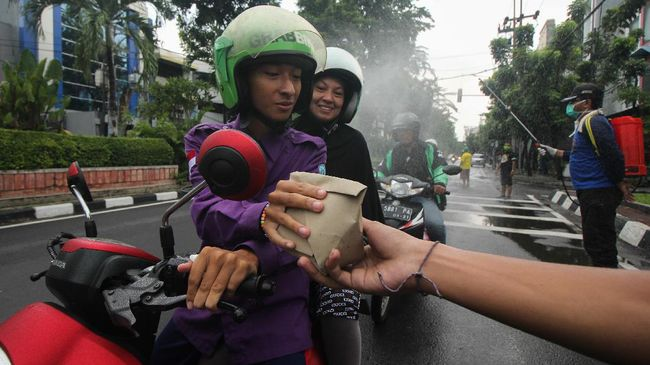
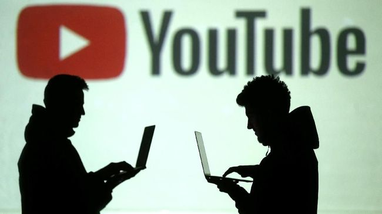

5 Cara Menjaga Kesehatan Mental Selama Pandemi Virus corona
KOMPAS.com - Pandemi virus corona tak bisa dipungkiri menimbulkan keresahan. Jutaan orang terinfeksi di seluruh dunia, ratusan ribu orang meninggal, dan ratusan ribu lainnya mengalami penyakit serius dan efek kesehatan jangka panjang. Tetapi, bukan hanya itu efek pandemi virus corona. Pandemi ini juga mengancam kesehatan mental banyak orang. Mulai dari kecemasan yang terus-menerus seputar virus dan kemungkinan infeksi, hingga kekhawatiran tentang orang-orang tercinta yang tinggal jauh dan mereka yang membutuhkan fasilitas perawatan jangka panjang, hingga pertengkaran dengan pasangan dan anak-anak yang belakangan sering terjadi.
Lalu, apa yang bisa kita lakukan untuk menhaga kesehatan mental selama masa karantina di tengah pandemi virus corona? Bagaimana kita bisa mendapatkan bantuan yang kita butuhkan tanpa harus membahayakan kesehatan fisik? Berikut ini lima cara yang bisa dilakukan untuk menjaga kesehatan mental selama pandemi virus corona.
1. Bertemu Online dengan Keluarga dan Teman. Dunia mungkin terkunci ,tetapi internet masih berfungsi, dan itu adalah kabar baik bagi kesehatan mental kita. Dengan koneksi internet, kita masih bisa menghubungi dengan kakek nenek di kampung halaman, mengobrol dengan orang tersayang yang tinggal jauh, berbicara dengan guru sekolah tentang rencana pelajaran anak-anak atau menghubungi teman-teman dekat hanya untuk tertawa bersama mereka. Koneksi online semacam ini bisa menjaga kesehatan mental selama masa karantina, jadi manfaatkan alat teknologi yang kamu miliki.
 2. Jadwalkan Sesi Terapi Online Kamu mungkin pernah mendengar kisah tukang cukur dan penata rambut yang mengadakan panggilan video dengan klien mereka, membimbing mereka langkah demi langkah untuk membantu mereka memotong rambut mereka sendiri. Jika sesuatu yang sepele seperti potong rambut dapat dilakukan dengan obrolan video, mengapa tidak sesuatu yang mendalam seperti terapi? Sesi terapi online bisa menjadi hal yang tepat untuk kesehatan mental, membangkitkan semangat, memberi mekanisme mengatasi apa yang kita butuhkan, dan membantu kita melewati masa karantina dengan kondisi emosional yang baik. Jika kamu sudah pernah menemui terapis, coba tanyakan apakah mereka dapat menjadwalkan sesi pengobatan jarak jauh melalui panggilan video.
2. Jadwalkan Sesi Terapi Online Kamu mungkin pernah mendengar kisah tukang cukur dan penata rambut yang mengadakan panggilan video dengan klien mereka, membimbing mereka langkah demi langkah untuk membantu mereka memotong rambut mereka sendiri. Jika sesuatu yang sepele seperti potong rambut dapat dilakukan dengan obrolan video, mengapa tidak sesuatu yang mendalam seperti terapi? Sesi terapi online bisa menjadi hal yang tepat untuk kesehatan mental, membangkitkan semangat, memberi mekanisme mengatasi apa yang kita butuhkan, dan membantu kita melewati masa karantina dengan kondisi emosional yang baik. Jika kamu sudah pernah menemui terapis, coba tanyakan apakah mereka dapat menjadwalkan sesi pengobatan jarak jauh melalui panggilan video.

3. Bantu Orang Lain yang Membutuhkan Banyak orang terkena imbas secara ekonomi akibat pandemi virus corona, terutama di masa karantina. Selain banyak orang kehilangan pekerjaan, jutaan usaha kecil di ambang kehancuran finansial. Realitas ekonomi akibat pandemi virus corona benar-benar meresahkan. Dalam kondisi ini, kamu bisa menjadi secercah “cahaya” bagi orang yang membutuhkan. Yang kamu perlukan hanyalah waktu dan keinginan untuk mewujudkannya. Kamu bisa membagikan makanan untuk orang yang membutuhkan, menggalang sumbangan untuk membeli alat kesehatan yang kemudian disumbangkan ke rumah sakit atau membagikan masker sekaligus mengedukasi orang-orang yang tak bisa tinggal di rumah karena harus mencari uang. “Membantu orang lain yang membutuhkan akan membuat kita merasa baik tentang diri sendiri, dan dengan demikian akan baik untuk kesehatan mental dan stabilitas emosi selama masa krisis ini,” kata Michael Dadashi, CEO Infinite Recovery. Tidak ada yang terasa lebih baik dari berbagi, terutama ketika ada begitu banyak orang lain yang sangat membutuhkan.
4. Luangkan Waktu untuk Memanjakan Diri Keinginan untuk memanjakan diri sendiri akan selalu tampak menggoda dalam menghadapi pandemi virus corona ini. Tetapi tidak ada salahnya kok memperlakukan diri sendiri dengan istimewa. Jika kamu merasa kewalahan dan berada di ambang krisis kesehatan mental, luangkan waktu sebentar untuk bernapas, rileks, dan lakukan sesuatu hanya untuk diri sendiri. Kamu bisa menonton film dan acara TV favorit, menikmati mandi busa yang menenangkan atau membaca buku sambil menyeruput secangkir teh. Apapun itu yang bisa membuatmu rileks, lakukanlah.

5. Matikan Berita Walaupun penting untuk tetap mendapat informasi dan mengikuti berita terbaru, bukan berarti kamu harus mengikutinya 24 jam 7 hari. Pasalnya, berita buruk dapat memiliki dampak negatif yang sangat besar pada kesehatan mental. Jika ingin meningkatkan kesehatan mental dan merasa lebih baik, mulailah dengan melakukan diet media. Periksa berita terbaru sesekali saja, kemudian matikan TV dan baca buku yang bagus atau dengarkan musik favorit sambil bersantai. Para ahli kesehatan mental telah lama memperingatkan, bahwa isolasi sosial buruk bagi kesejahteraan emosional pasien mereka. Terapis mendorong pasien mereka untuk terlibat dengan dunia di sekitar mereka, menjangkau orang lain, berteman, dan bekerja. Sementara karantina diperlukan untuk menghentikan penyebaran virus corona, penting untuk memenuhi kebutuhan terapi online, diet media, perawatan diri, dan tindakan lain untuk mengurangi dampak kesehatan mental. Kelima cara tersebut dapat membantu kita menghadapi masa karantina lebih efektif, sehingga kita dapat muncul dengan lebih bahagia dan lebih sehat ketika krisis virus corona akhirnya berakhir.